먼저 생각해 보세요.
Das ist alles, was ich brauche. alles 뒤에서는 어떤 말로 문장을 잇나요?
alles, etwas, nichts 뒤에서는 was로 이어요.
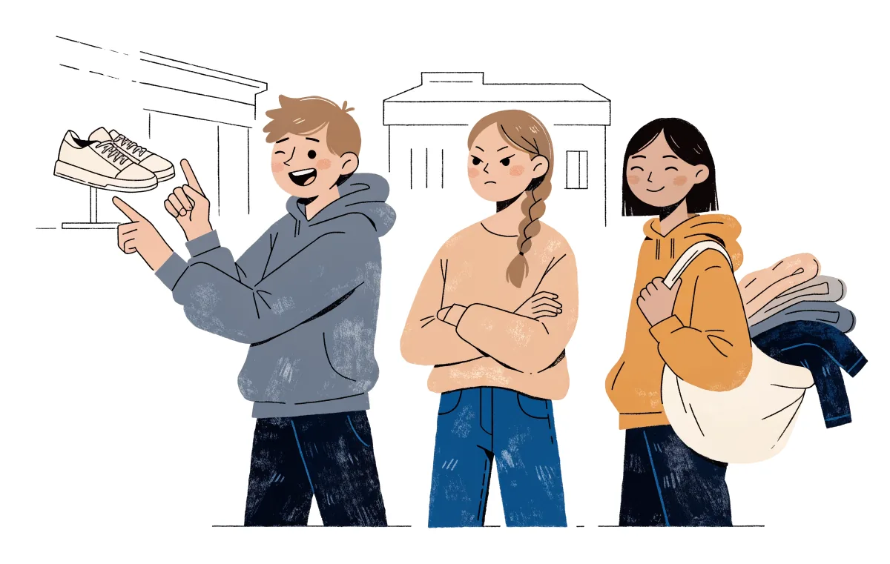
5월이에요. Lukas는 광고에서 본 운동화를 갖고 싶어 해요. 값은 180유로예요. Emma와 Yuna는 그 신발이 정말 필요한지 물어요. 팟캐스트 팀은 광고가 어떻게 사람을 움직이는지 알아보기로 해요.
눌러서 들어 보세요.
먼저 생각해 보세요.
Das ist alles, was ich brauche. alles 뒤에서는 어떤 말로 문장을 잇나요?
alles, etwas, nichts 뒤에서는 was로 이어요.
Lektion 1의 낱말 다섯 개를 다시 떠올려 보세요.
문법 Relativsätze mit was und wo (alles, was … / die Stadt, wo …), statt … zu, ohne … zu
이 과를 마치면 내 소비 습관을 돌아보고, 광고를 분석하고, 장점과 단점을 비교할 수 있어요.
토요일 오후, 쾰른의 가게 거리예요. Lukas가 신발 가게 앞에서 멈춰 서요.
들으면서 찾아보세요. Emma는 Lukas에게 얼마나 기다리라고 하나요?
다음 주, 팟캐스트 「Mitreden」을 녹음해요. 팀이 운동화 광고를 살펴봐요.
들으면서 찾아보세요. Lukas는 일주일 뒤에 신발을 샀나요?
두 대화를 듣고 답하세요.
Wie viel kosten die Schuhe?
Lukas hat noch keine Schuhe für den Sport.
Er hat schon drei Paar.
Was schlägt Yuna vor?
Wie lange soll Lukas warten?
Wer ist die Zielgruppe der Werbung?
Lukas hat die Schuhe nach einer Woche gekauft.
Nach einer Woche wollte er sie nicht mehr.
광고의 단점으로 무엇을 말했나요?
낱말 33개예요. 낱말이나 예문 앞의 단추를 누르면 소리가 나요. 명사는 der, die, das를 색으로 구분했어요.
der Konsum 소비
Unser Konsum macht viel Müll.우리의 소비는 쓰레기를 많이 만들어요.
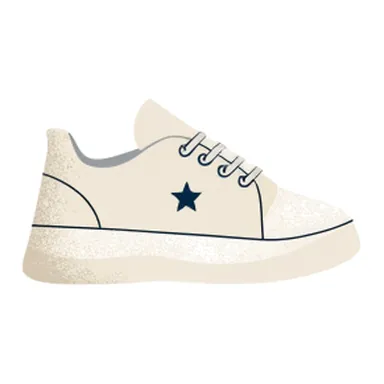
die Marke, die Marken 상표, 브랜드
Diese Marke tragen viele Jugendliche.이 상표는 많은 청소년이 입어요.
die Qualität 품질
Die Qualität ist wichtiger als der Preis.품질이 값보다 중요해요.
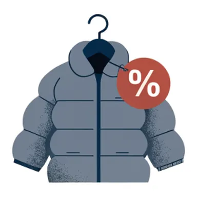
der Rabatt, die Rabatte 할인
Heute gibt es zwanzig Prozent Rabatt.오늘은 20퍼센트 깎아 줘요.
das Sonderangebot, die Sonderangebote 특별 할인 상품
Die Jacke ist im Sonderangebot.그 재킷은 특별 할인 중이에요.
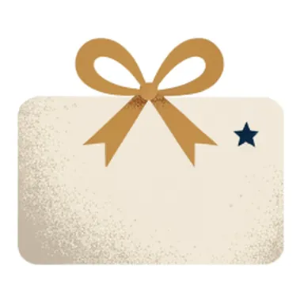
der Gutschein, die Gutscheine 상품권, 쿠폰
Zum Geburtstag bekomme ich einen Gutschein.생일에 나는 상품권을 받아요.
die Garantie, die Garantien 보증
Das Handy hat zwei Jahre Garantie.그 휴대폰은 보증 기간이 2년이에요.
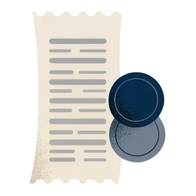
die Quittung, die Quittungen 영수증
Ohne Quittung kann man nichts umtauschen.영수증이 없으면 아무것도 바꿀 수 없어요.
die Bestellung, die Bestellungen 주문
Meine Bestellung kommt morgen.내가 주문한 것이 내일 와요.
liefern, hat geliefert 배달하다, 배송하다
Das Paket wird morgen geliefert.소포는 내일 배달돼요.
das Paket, die Pakete 소포, 택배
Ich schicke das Paket zurück.나는 소포를 돌려보내요.
die Anzeige, die Anzeigen (신문이나 인터넷의) 광고
In der Zeitung steht eine Anzeige.신문에 광고가 실려 있어요.
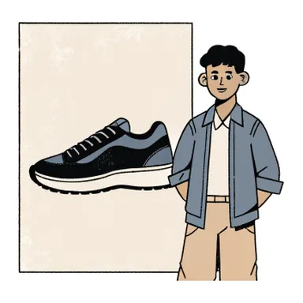
das Plakat, die Plakate 포스터, 벽보
An der Haltestelle sehe ich jeden Tag ein Plakat.정류장에서 나는 날마다 포스터를 봐요.
der Slogan, die Slogans 광고 문구
Der Slogan ist kurz und lustig.광고 문구가 짧고 재미있어요.
die Zielgruppe, die Zielgruppen 대상 고객
Die Zielgruppe sind Jugendliche.대상 고객은 청소년이에요.
beeinflussen, hat beeinflusst 영향을 주다
Werbung beeinflusst uns jeden Tag.광고는 날마다 우리에게 영향을 줘요.
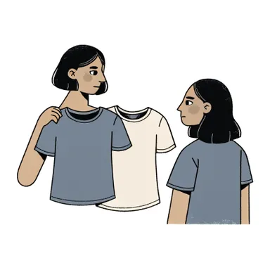
überreden, hat überredet 구슬려서 하게 하다
Der Verkäufer wollte mich überreden.판매원이 나를 구슬리려고 했어요.
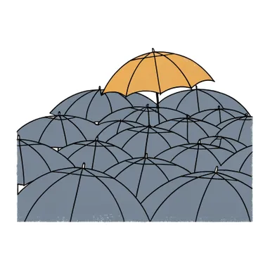
auffallen, ist aufgefallen (du fällst auf, er fällt auf) 눈에 띄다
Das Plakat fällt sofort auf.그 포스터는 바로 눈에 띄어요.
wirken, hat gewirkt 효과가 있다, 통하다
Die Werbung hat bei mir gewirkt.그 광고는 나한테 통했어요.
der Trend, die Trends 유행
Dieser Trend kommt aus Korea.이 유행은 한국에서 왔어요.
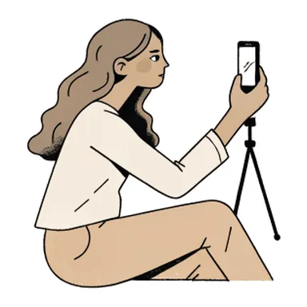
der Influencer, die Influencer 인플루언서
Der Influencer zeigt jeden Tag neue Produkte.그 인플루언서는 날마다 새 제품을 보여 줘요.
die Mode, die Moden 패션, 유행하는 옷차림
Yuna interessiert sich für Mode.Yuna는 패션에 관심이 있어요.
der Vorteil, die Vorteile 장점
Ein Vorteil ist der Preis.장점 하나는 값이에요.
der Nachteil, die Nachteile 단점
Jedes Produkt hat auch Nachteile.어떤 제품이든 단점도 있어요.
das Bedürfnis, die Bedürfnisse 꼭 있어야 하는 것, 욕구
Essen und Schlaf sind Bedürfnisse.먹는 것과 자는 것은 꼭 있어야 해요.
nötig 필요한
Ist das wirklich nötig?그게 정말 필요해?
unnötig 필요 없는
Ich kaufe keine unnötigen Dinge mehr.나는 이제 필요 없는 물건을 사지 않아요.
praktisch 쓸모 있는, 편리한
Die Tasche ist sehr praktisch.그 가방은 아주 편리해요.
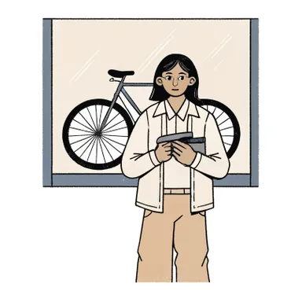
sich leisten, hat sich geleistet (값을 치르고) 가질 형편이 되다
Das kann ich mir nicht leisten.그건 내 형편으로는 못 사요.
die Entscheidung, die Entscheidungen 결정
Das war eine gute Entscheidung.그건 좋은 결정이었어요.
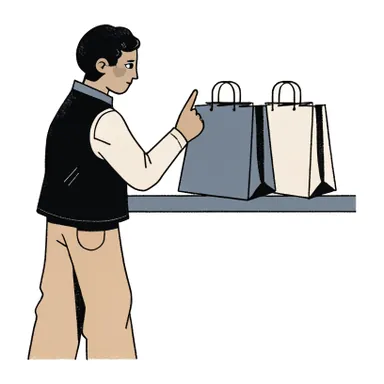
auswählen, hat ausgewählt 고르다
Ich wähle ein Geschenk für Oma aus.나는 할머니께 드릴 선물을 골라요.
wert ~의 값어치가 있는
Die Schuhe sind ihr Geld nicht wert.그 신발은 그 값을 못 해요.
statt ~ 대신에
Statt zu kaufen, tausche ich Kleidung.나는 옷을 사는 대신 바꿔 입어요.
이 과의 낱말로 여덟 문제를 풀어요.
예문을 보고 답해 보세요.
Ich kaufe nichts, … ich nicht brauche. 빈칸에 알맞은 말은 무엇인가요?
규칙
alles, etwas, nichts, vieles 뒤와 das Beste, das Schwerste 같은 말 뒤에서는 관계문을 was로 시작해요. 동사는 맨 끝에 써요.
| 앞말 | 보기 |
|---|---|
| alles | Das ist alles, was ich habe. |
| etwas | Ich suche etwas, was nicht teuer ist. |
| nichts | Es gibt nichts, was ich brauche. |
| das Beste | Das ist das Beste, was du tun kannst. |
주의 명사 뒤에서는 der, die, das를 써요. Das ist das Buch, das ich brauche. Das ist alles, was ich brauche.
예문을 보고 답해 보세요.
Das ist die Stadt, wo ich wohne. wo 대신 쓸 수 있는 말은 무엇인가요?
규칙
곳을 나타내는 말 뒤에서는 관계문을 wo로 시작할 수 있어요. in dem, in der와 뜻이 같아요. 도시와 나라 이름, dort 뒤에서는 언제나 wo를 써요.
| wo | 전치사 + 관계대명사 |
|---|---|
| der Laden, wo ich arbeite | der Laden, in dem ich arbeite |
| die Stadt, wo ich wohne | die Stadt, in der ich wohne |
| Köln, wo Yuna lebt | 이름 뒤에서는 wo만 써요 |
주의 wo 문장에서도 동사는 맨 끝에 와요. Das ist der Park, wo wir uns immer treffen.
예문을 보고 답해 보세요.
Er kauft, ohne die Preise zu vergleichen. 그는 값을 비교했나요?
규칙
statt … zu는 '~하는 대신에', ohne … zu는 '~하지 않고'예요. um … zu처럼 zu와 동사 원형을 맨 끝에 써요. 나누어지는 동사는 zu가 가운데에 들어가요.
| 보기 | |
|---|---|
| statt … zu | Statt zu kaufen, tausche ich Kleidung. |
| ohne … zu | Er geht, ohne etwas zu sagen. |
| 나누어지는 동사 | Sie kauft, ohne nachzudenken. |
주의 두 문장의 주어가 같을 때만 써요. Ich kaufe nichts, ohne zu vergleichen. 사는 사람도 비교하는 사람도 나예요.
Yuna가 가게에서 재킷을 돌려주려고 해요. 듣고 답하세요.
Im Laden
Verkäuferin Guten Tag. Kann ich dir helfen?
Yuna Ja. Ich habe diese Jacke im Internet bestellt, aber sie ist zu klein. Kann ich sie hier zurückgeben?
Verkäuferin Hast du die Quittung?
Yuna Ja, hier. Die Bestellung ist erst fünf Tage alt.
Verkäuferin Gut. Du kannst die Jacke umtauschen oder das Geld zurückbekommen. Was ist dir lieber?
Yuna Ich hätte gern das Geld zurück. Ich habe gemerkt, dass ich die Jacke nicht brauche.
Warum möchte Yuna die Jacke zurückgeben?
Was will die Verkäuferin sehen?
Yuna hat die Jacke vor fünf Wochen bestellt.
Die Bestellung ist erst fünf Tage alt.
Yuna는 무엇을 고르나요?
듣고 알맞은 것을 고르세요.
Emma는 어떤 것을 사지 않나요?
Ich kaufe nichts, was ich nicht wirklich brauche.
Lukas는 이 가게에서 무엇을 샀나요?
Das ist der Laden, wo ich mein erstes Fahrrad gekauft habe.
Elif는 책을 어떻게 구하나요?
Statt neue Bücher zu kaufen, leihe ich sie von Freunden.
그 사람은 주문하기 전에 무엇을 하지 않았나요?
Er hat das Handy bestellt, ohne den Preis zu vergleichen.
Emma가 팟캐스트 게시판에 쓴 글이에요. 읽고 답하세요.
Ein Monat ohne Einkaufen
Im Mai habe ich einen Monat lang nichts gekauft, was ich nicht wirklich brauche. Nur Essen und Dinge für die Schule waren erlaubt.
Die erste Woche war am schwersten. In der Straße, wo ich wohne, gibt es drei Läden mit Sonderangeboten.
Statt in die Stadt zu gehen, habe ich mit Yuna Kleidung getauscht. Das war lustig und hat nichts gekostet.
Am Ende des Monats hatte ich sechzig Euro gespart, ohne etwas zu vermissen.
Mein Ergebnis: Vieles, was ich früher gekauft habe, war unnötig. Jetzt warte ich immer eine Woche, bevor ich etwas kaufe.
Was hat Emma im Mai gemacht?
Emma durfte kein Essen kaufen.
Essen und Dinge für die Schule waren erlaubt.
Was hat Emma gemacht, statt in die Stadt zu gehen?
Wie viel Geld hatte Emma am Ende gespart?
Emma는 이제 물건을 사기 전에 어떻게 하나요?
Lukas가 신발 두 켤레를 견주어 본 표예요. 보고 답하세요.
Zwei Paar Schuhe
| Was? | Schuh A | Schuh B |
|---|---|---|
| Preis | 180 Euro | 70 Euro |
| Marke | bekannt | nicht bekannt |
| Qualität | gut | gut |
| Garantie | 2 Jahre | 2 Jahre |
Welcher Schuh ist billiger?
Schuh A hat eine bessere Qualität als Schuh B.
두 신발의 품질은 같아요.
Was ist bei den Schuhen verschieden?
was, das, wo 가운데 알맞은 말을 고르세요.
Das ist alles, ich brauche.
내가 필요한 건 그게 다예요.
Das ist das Handy, ich mir wünsche.
내가 갖고 싶은 휴대폰이에요.
명사 뒤에는 das를 써요.
Es gibt nichts, mir gefällt.
마음에 드는 것이 하나도 없어요.
Das ist der Laden, ich arbeite.
내가 일하는 가게예요.
Köln ist die Stadt, Yuna wohnt.
쾰른은 Yuna가 사는 도시예요.
Das ist das Beste, du tun kannst.
그게 네가 할 수 있는 가장 좋은 일이야.
한국어 뜻을 보고 알맞은 말을 고르세요.
neue Schuhe zu kaufen, repariere ich die alten.
새 신발을 사는 대신 헌 신발을 고쳐요.
Er kauft alles, die Preise zu vergleichen.
그는 값을 비교하지 않고 다 사요.
Sie geht aus dem Laden, ohne etwas .
그 애는 아무것도 사지 않고 가게에서 나와요.
Statt , gehen wir in den Park.
물건을 사는 대신 우리는 공원에 가요.
나누어지는 동사는 zu가 가운데에 들어가요.
Ich spare Geld, ein Fahrrad zu kaufen.
나는 자전거를 사려고 돈을 모아요.
Lukas hat bestellt, lange nachzudenken.
Lukas는 오래 생각하지 않고 주문했어요.
알맞은 낱말을 고르세요.
Heute gibt es zwanzig Prozent .
오늘은 20퍼센트 깎아 줘요.
Ohne kann man nichts umtauschen.
영수증이 없으면 아무것도 바꿀 수 없어요.
Das Paket wird morgen .
소포는 내일 배달돼요.
Das ist zu teuer. Das kann ich mir nicht .
너무 비싸요. 내 형편으로는 못 사요.
Ein vom Internet: Man kann die Preise schnell vergleichen.
인터넷의 장점 하나는 값을 빨리 비교할 수 있다는 거예요.
Werbung uns jeden Tag.
광고는 날마다 우리에게 영향을 줘요.
낱말을 순서대로 눌러 문장을 만드세요.
내가 필요한 건 그게 다야.
내가 일하는 가게야.
그는 값을 비교하지 않고 사.
나는 옷을 사는 대신 바꿔 입어.
낱말과 뜻을 짝지으세요.
듣고 그대로 써 보세요.
Brauche ich das wirklich? 나한테 그게 정말 필요할까?
Das ist alles, was ich brauche. 내가 필요한 건 그게 다야.
Das kann ich mir nicht leisten. 그건 내 형편으로는 못 사.
Ich gebe mein Geld für … aus. 나는 ~에 돈을 써.
Ich kaufe oft etwas, was ich nicht brauche. 나는 필요 없는 것을 자주 사.
Ich vergleiche zuerst die Preise. 나는 먼저 값을 비교해.
Das kann ich mir nicht leisten. 그건 내 형편으로는 못 사.
Auf dem Plakat sieht man … 포스터에는 ~이 나와.
Die Zielgruppe sind … 대상 고객은 ~이야.
Die Werbung verspricht, dass … 광고는 ~라고 약속해.
Der Slogan heißt … 광고 문구는 ~이야.
Ein Vorteil ist, dass … 장점 하나는 ~라는 거야.
Ein Nachteil ist, dass … 단점 하나는 ~라는 거야.
Im Vergleich zu … ist … ~에 견주면 ~은 …
Das ist sein Geld nicht wert. 그건 그 값을 못 해.
Statt … zu kaufen, könntest du … ~을 사는 대신 ~할 수 있어.
Warte eine Woche! 일주일 기다려 봐!
Vergleich die Preise! 값을 비교해 봐!
대화 A에서 역할을 하나 고르세요. 상대의 말은 음성으로 나오고, 내 차례에는 직접 말해요.
내 소비 습관을 떠올리며 적으세요. 완성된 문장을 소리 내어 읽어 보세요.
Ich gebe mein Geld oft für Kleidung und Essen aus.
Einmal habe ich eine teure Jacke gekauft, ohne nachzudenken.
Statt Kleidung zu kaufen, tausche ich mit Freunden.
Ich kaufe nichts mehr, was ich nicht brauche.
Im Internet oder im Laden?
인터넷에서 사는 것과 가게에서 사는 것의 장단점을 견주는 글을 써요. 여덟 문장쯤 써요.
Viele Jugendliche kaufen heute im Internet ein. Ein Vorteil ist, dass man die Preise schnell vergleichen kann. Außerdem wird alles nach Hause geliefert. Ein Nachteil ist, dass man die Kleidung nicht anprobieren kann. Im Laden, wo man alles anprobieren kann, kauft man selten die falsche Größe. Ich habe einmal Schuhe bestellt, ohne die Größe zu prüfen. Ich musste das Paket zurückschicken. Meiner Meinung nach sollte man Kleidung im Laden kaufen, statt sie zu bestellen.
다 쓴 뒤에 확인해 보세요.
Ich kann sagen, wofür ich Geld ausgebe und was ich wirklich brauche.내가 어디에 돈을 쓰고 정말 필요한 것이 무엇인지 말할 수 있어요.
Ich kann sagen, wie eine Werbung wirkt und wen sie erreichen will.광고가 어떻게 통하고 누구를 겨냥하는지 말할 수 있어요.
Ich kann Vorteile und Nachteile vergleichen.장점과 단점을 견줄 수 있어요.